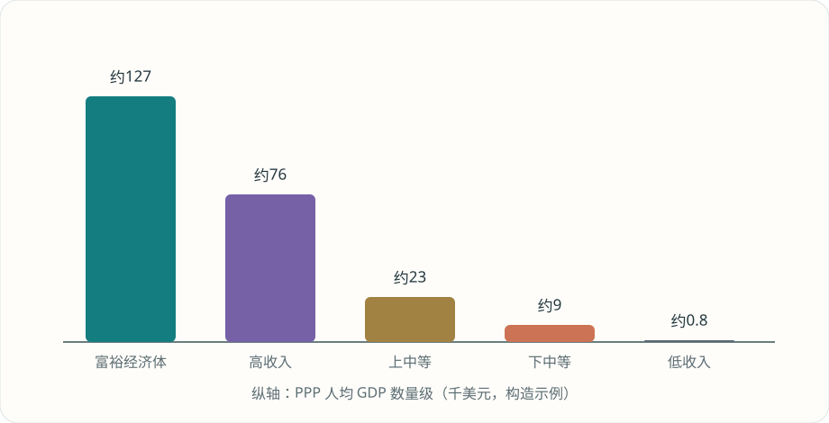
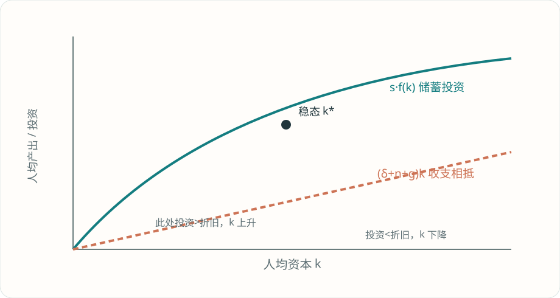
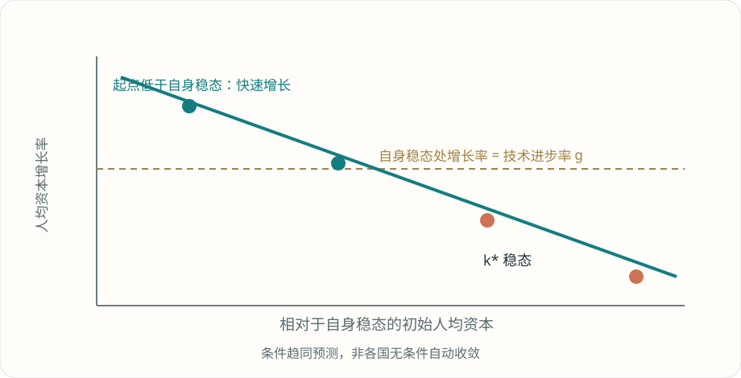

经济增长：索洛模型
为什么有些国家富裕、有些国家长期贫穷？把劳动、资本与储蓄放进一个人均生产函数，看稳态在哪里，以及为什么长期人均增长最终只能来自技术进步。
为什么有些国家富、有些国家穷？
在前二十章我们主要讨论短期波动——通胀、失业、货币与财政政策。从本章起，把时间尺度拉长到几十年甚至上百年，追问一个更根本的问题：一个经济体的人均收入水平，长期由什么决定？罗伯特·索洛在 1956 年的论文《对经济增长理论的贡献》中给出了第一套系统回答，它至今仍是增长分析的基准模型。
现实中的差距是巨大的。下面这张图只是用来感受数量级：富裕经济体的人均产出（按购买力平价计算）可以达到低收入经济体的数十倍甚至上百倍。

这种差距并非自古如此。工业革命之前，各地人均收入大体相近；过去两百多年增长的分化才造就了今天的分野。因此关键问题变成：什么机制能让一个人均收入水平持续上升，而不是停在某个水平？索洛模型正是围绕这个问题展开。
人均生产函数与递减的资本边际产出
索洛模型从总量生产函数出发：产出 Y 由资本存量 K 与劳动 L 决定，记为 Y = F(K, L)。这是一个技术（模型）假设，不是会计恒等式：它声称给定 K 与 L，经济最多能产出多少。在规模报酬不变的假设下，把两边除以 L 可以得到更便于分析的人均形式：y = f(k)，其中 y=Y/L 是人均产出，k=K/L 是人均资本（资本—劳动比）。
生产函数要满足稻田条件：资本为零时产出为零，资本越多产出越高（f′(k)>0），但每多一单位资本带来的新增产出递减（f″(k)<0）。最后一点是整个模型的关键：资本纵使不断累加，也无法无限拉高人均产出。
α 在增长核算中常被解释为资本收入份额。它是参数假设：不同数据口径、不同时期得到的估计并不相同，本文的数值仅用于演算。α 越小，资本边际产出递减得越快，稳态也越低。
资本积累如何决定稳态
人均资本 k 随时间变化，由两股力量决定。一方面，人们把收入的一部分储蓄起来并转化为投资；设储蓄率为 s（0<s<1），人均投资为 s·f(k)。另一方面，资本会折旧（比率 δ），同时人口增长（n）与技术进步（g）会“稀释”人均资本；三者合在一起，为维持人均资本不变所需的收支相抵投资为 (δ+n+g)k。把两者相减，得到资本积累方程：
当 s·f(k) 恰好等于 (δ+n+g)k 时，人均资本不再变化，经济达到稳态。稳态不是“经济静止”：总量产出仍在增长，只是人均指标不再上升。对柯布—道格拉斯函数，稳态有解析解：

由此可见，高储蓄率能带来更高的稳态水平，却不能让稳态之后的人均产出继续加速增长。储蓄率影响“富到什么程度”，不决定长期增长率。
演算稳态：储蓄率与收支相抵投资
在固定 α 的柯布—道格拉斯假设下，用解析解检验稳态随参数的移动；所有数字为构造演算，不是任何国家的实测校准。
技术进步与索洛残差
如果资本积累不能带来人均产出的永久增长，那长期增长从哪里来？索洛的回答是技术进步。他把生产函数写成 Y = A·F(K, L)，其中 A 是全要素生产率（TFP），也叫“索洛残差”。在“有效劳动”形式下，令 A 以固定速率 g 增长，则稳态时每单位有效劳动的资本与产出不变，但：人均产出 y 以速率 g 增长，总产出 Y 以速率 g+n 增长。这样，持续的人均增长就与技术进步速度挂钩。
增长核算把产出增长拆成投入增长与残差两类。在柯布—道格拉斯且完全竞争、要素按边际产出获得报酬的假设下，可以写成下面的分解式：
下表用增长核算的思路做一份构造示例，用来说明“要素驱动”与“效率驱动”的相对比重如何变化。它不是官方统计数据，仅为教学演算。
| 时期 | GDP 年均增速 | 资本贡献 | 劳动贡献 | TFP 残差 | TFP 占比 |
|---|---|---|---|---|---|
| 1980–1990 | 9.3 | 4.0 | 2.5 | 2.8 | 30 |
| 1990–2000 | 10.5 | 5.0 | 1.5 | 4.0 | 38 |
| 2000–2010 | 10.8 | 6.0 | 1.0 | 3.8 | 35 |
| 2010–2020 | 6.8 | 4.5 | 0.3 | 2.0 | 29 |
这份示意揭示了两个常见现象：其一，在追赶初期，要素投入（尤其是高储蓄支撑的资本形成）贡献很大；其二，随着劳动增长放缓、资本边际产出递减，增长越来越依赖 TFP。但这只是分解，不是“TFP 下降必然导致增速下降到某个具体数字”的因果预测——后者需要额外假设。
趋同、分化与条件趋同
索洛模型给出一个可检验的预测：人均资本低于自身稳态的经济体，资本边际产出更高，投资带来的增长更快，因此会向稳态追赶。如果两个经济体在储蓄率、人口增长、技术进步、制度等条件上相同，它们最终会趋同于同一水平。这就是条件趋同（conditional convergence）。“条件”二字不可省略：趋同是对自身稳态的追赶，而不是自动向全球平均靠拢。

现实中，“无条件趋同”在全世界范围内并不成立：最贫穷与最富裕分组之间的人均收入差距仍很大。但把条件相近的经济体分组后，组内确实能看到追赶的证据，一些研究还发现世界增长呈现出“俱乐部趋同”的特征：各组内部趋同，俱乐部之间的差距反而扩大。
政策含义也随之明确：提高一个穷国的稳态水平，需要改善制度、提升教育、影响储蓄与投资效率；仅仅转移资金本身不一定改变长期增长率。索洛模型的边界也很清楚：它把技术进步当作外部给定，因而无法回答“创新从何而来”——这留给下一章的内生增长理论。
来源与阅读
本章参数与数字均为构造示例，不代表任何国家的官方统计；概念与方法请见以下来源。